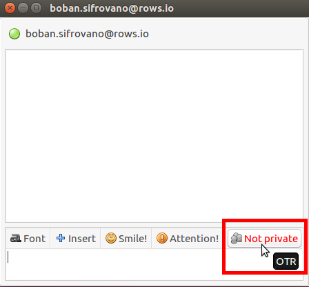

OTR protokol ne podržava grupno šifrovano dopisivanje, kao ni šifrovanu razmenu fajlova,
već samo tekstualne poruke.
Međutim koristeći OTR možete se sa sagovornikom dogovoriti oko tajne šifre tokom
dopisivanja, a zatim drugim programom šifrovati fajl dogovorenom šifrom pre slanja,
i tek onda izvršiti slanje.
OTR protokol je nezavistan od protokola/servisa koji koristite za komunikaciju pa ćete
tako moći da ga koristite za privatnu konverzaciju i preko IRC-a, Google Talk-a,
Yahoo Messinger-a i drugih, dok god i vaš sagovornik koristi isti protokol,
kao što se ne možete dopisivati ako koristiti Yahoo Messinger, a sagovornik IRC.
OTR funkcioniše samo ako ga koriste obe strane u komunikaciji.
2. Preuzimanje i Instaliranje Pidgin-a
Kako bi ste instalirali Pidgin na Ubuntu (i drugim distribucijama zasnovanim
na Debian-u) izvršite sledeću komandu iz terminala:
$ sudo apt-get install pidgin pidgin-otr
Ova komanda će instalirati Pidgin i OTR dodatak za Pidgin za vas na vašem računaru.
Figure 1: Instalirajte Pidgin i OTR dodatak za Pidgin.
Figure 2: Prihvatite instalaciju potrebnih biblioteka.
3. Podešavanje naloga
Figure 3: Kada ste instalirali Pidgin pokrenite ga.
Figure 4: Otvoriće se prozor sa porukom dobrodošlice i
ponuditi da dodate novi nalog. Kliknite "Add...".
Figure 5: Izaberite XMPP protokol, vaše korisničko ime,
server kao i šifru za postojeći ili željeni nalog i ukoliko
tek kreirate novi nalog štiklirajte kvadratić
"Create this new account on the server",
a zatim pritisnite dugme "Add"
Ukoliko nemateveć postojeći nalog, unesite željeno korisničko ime
(mi koristimo alisa.sifrovano korisničko ime) kao i server
(mi koristimo crypt.mn server) i šifru koju želite i onda
štiklirajte kvadratić "Create this new account on the server".
Ukoliko već imate nalog, nemojte štiklirate kvadratić za kreiranje novog naloga.
Ako ne znate koji XMPP server da koristite, listu javnih XMPP servera možete naći na
list.jabber.at
Figure 6: Prikazaće vam se novi prozor sa potanjem da li želite da
prihvatite sertifikat servera na kome imate ili kreirate nalog.
To prihvatite. Pritisnite "Accept".
Figure 7: I potvrdite vaše korisničko ime i šifru za taj nalog.
Figure 8: Ako sve prođe kako treba obavestiće vas o uspešno
registrovanom nalogu. Pritisnite "Close".
Figure 9: Sada bi trebalo da ste povezani i na vazi (eng. Online). I da
pidgin izgleda otprilike ovako.
4. Generisanje OTR ključa
Kada ste podesili vaš nalog potrebno je da generišete vaš jedinstveni OTR
ključ kako bi kasnije mogli da privatno ćaskate razmenjujući šifrovane poruke.
Figure 10: Idite na "Tools" pa "Plugins".
Figure 11: Štiklirajte kvadratić ispred dodatka "Off-The-Reccord Messaging",
a zatim pritisnite "Configure".
Figure 12: Otvoriće se novi prozoru kome treba da pritisnete dugme Generate
da bi ste generisali svoj novi i jedinstveni OTR ključ. Takođe trebalo bi
da štiklirate sve kvadratiće u tom istom prozoru kako bi olakšavaju kasnije
šifrovanje konverzacija, ne bi čuvali logove, i automatski zahtevali šifrovanu
konverzaciju sa sagovornikom.
Figure 13: Morate malo sačekati da se OTR ključ generiše.
Figure 14: Kada se ključ generiše prikazaćevam se OTR otisak (eng. OTR
fingerprint) dužine 40 heksadekadnih karaktera. To je vaš javniotisak koga
možete objaviti, a svakako ga moraju znati osobe koje žele da sa vama
šifrovano komuniciraju koristeći OTR.
5. Dodavanje kontakta
Kada imate namešten XMPP nalog i OTR ključ samo vam fali još kontakt
sa kojim možete šifrovano da razmenjujete poruke.
Ono što treba naglasiti je da i kontakt osoba mora koristi isti protokol
kako bi ste komunicirali sa njom, i da mora imati svoj OTR ključ.
Međutim kontakt ososba ne mora imati nalog na istom serveru na kome imate i vi,
samo je važno da ima nalog na nekom XMPP serveru kao i vi.
Figure 15: Izaberite "Buddies" -> "Add buddy..."
Figure 16: U novootvorenom prozoru unesite puni ID vašeg kontakta (u
našem slučaju to je boban.sifrovano@rows.io) i eventualno ime
tog kontakta.
Figure 17: Kada dodate novog kontakta, njemu će stići obaveštenje da ste ga
dodali i da želite da stupite u kontak sa njime. Ovo obaveštenje može stići
i vamaukoliko vas neko doda za svog kontakta. Ukoliko vaš zahtev prihvati,
ili vi njegov, oboje nakon toga možete stupiti u dalju konverzatiju.
Figure 18: Nakon čega bi vaš glavni Pidgin prozor trebalo da izgleda ovako.
6. Šifrovana konverzacija
Figure 19: Kada imate kontakta, možete započeti konverzaciju.
Desni klik na kontakta, pa "IM".

Figure 20: Sada kada imate i kontakta možete započeti konverzaciju.
Samo što ona neće biti šifrovana dok to sami ne omogućite.
Pritisnite crveno dugme "Not Private" u donjem desnom uglu prozora
započete konverzacije, pa "Start private conversation" kako bi ste
započeli šifrovanu konverzaciju.
Figure 21: Posle čega je potrebno da verifikujete sagovornika iako
je dalja konverzacija šifrovana kako bi bili sigurni da neki napadač
izmedju vas i vašeg kontakta ne pokušava da vas prevari i predstavi
se kao vaš kontakt (tzv. MiTM napad). Pritisnite "Unverified" pa
"Authenticate buddy".
Figure 22: Nakon toga otvoriće sa novi prozor za verifikaciju kontakta.
Izaberite motod verifikacije (preko pitanja i odgovora, zajedničke tajne,
ili jednostavno uporedite OTR otiske).
Figure 23: Mi biramo upoređivanje OTR otisaka jer je naš sagovornik u
istoj prostoriji pa možemo se uveriti da je to baš njegov OTR otisak.
Izaberite "I have" i onda "Authenticate". Možete odabrati i druge načine
verigikacije putemdeljenje tajne (ukoliko ste ste oko tajne predhodno
dogovorili) ili pitanja-i-odgovora ako poznajete kontakta
(ukoliko lično poznajete kontakta i zante pitanje na koje samo on
može odgovoriti).
Figure 24: Nakon toga sva dalja konverzacija je šifrovana End-To-End.